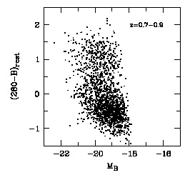

Home
| People | Partners
| VOStat | StatCodes | Data
& Tutorials | Events | Bibliographies

COMBO-17 galaxy datasetThe CASt datasetCOMBO17.datCOMBO17.csv Astronomical background Galaxies are fundamental structures in the Universe. Our Sun lives in the Milky Way Galaxy we can see as a patchy band of light across the sky. The components of a typical galaxy are: a vast number of stars (total mass ~106-1011 Mo where Mo is the unit of a solar mass), a complex interstellar medium of gas and dust from which stars form (typically 1-100% of the stellar component mass), a single supermassive black hole at the center (typically <1% of the stellar component mass), and a poorly understood component called Dark Matter with mass ~5-10-times all the other components combined. Over the ~14 billion years since the Big Bang, the rate at which galaxies convert interstellar matter into stars has not been constant, and thus the brightness and color of galaxies change with cosmic time. This phenomenon has several names in the astronomical community: the history of star formation in the Universe, chemical evolution of galaxies, or simply galaxy evolution. A major effort over several decades has been made to quantify and understand galaxy evolution using telescopes at all wavelengths. The traditional tool for such studies has been optical spectroscopy which easily reveals signatures of star formation in nearby galaxies. However, to study star formation in the galaxies recently emerged after the Big Bang, we must examine extremely faint galaxies which are too faint for spectroscopy, even using the biggest available telescopes. A feasible alternative is to obtain images of faint galaxies at random locations in the sky in narrow spectral bands, and thereby construct crude spectra. First, statistical analysis of such multiband photometric datasets are used to classify galaxies, stars and quasars. Second, for the galaxies, multivariate regression is made to develop photometric estimates of redshift, which is a measure both of distance from us and age since the Big Bang. Third, one can examine galaxy colors as a function of redshift (after various corrections are made) to study the evolution of star formation. The present dataset is taken after these first two steps are complete. Dataset Wolf et al. (2004) provide the first public catalog of a large dataset (63,501 objects) with brightness measurements in 17 bands in the visible band. (Note that the Sloan Digital Sky Survey provides a much larger dataset of 108 objects with measurements in 5 bands.) We provide here a subset of their catalog with 65 columns of information on 3,462 galaxies. These are objects in the Chandra Deep Field South field which Wolf and colleagues have classified as `Galaxies'. The column headings are formally described in their Table 3, and the columns we provide are summarized here with brief commentary: Col 1: Nr, object number Col 2-3: Total R (red band) magnitude and its error. This was the band at which the basic catalog was constructed. Magnitudes are inverted logarithmic measures of brightness. A galaxy with R=21 is 100-times brighter than one with R=26. The error is the standard deviation derived from detailed knowledge of the measurement process. This dataset is an excellent example of astronomical datasets where each variable is accompanied by heteroscedastic measurement errors of known variances. Col 4-5: ApDRmag is the difference
between the
total and aperture magnitude in the R band. This is a rough
measure of the size of the galaxy in the image where ApDRmag=0
corresponds to a point source. Negative values are not physically
meaningful. mu_max is the central surface brightness of the
object in the R band. The difference between Rmag and mu_max
should also be an indicator of galaxy size. Col 10-29: These give the absolute magnitudes (i.e. intrinsic luminosities) of the galaxy in 10 bands, with their measurement errors. They are based on the measured magnitudes and the redshifts, and represent the intrinsic luminosities of the galaxies; a galaxy with M=-15 is 100-times less luminous than one with M=-20. These magnitudes are not all independent of each others, but the are important for representing intrinsic properties of the galaxies. Below is one of several redshift-stratified plots of the B-band absolute magnitude (abscissa) against the difference of magnitude (i.e. ratio of luminosities) between the 2800A ultraviolet and blue band, which is a sensitive indicator of star formation. A redshift-dependent bimodal distribution is seen. 
Col 30-55: Observed brightnesses in 13 bands in sequence from 420 nm in the ultraviolet to 915 nm in the far red. These are given in linear variables with units of photon flux densities, photons/m2/s/nm. Again, each measurement is accompanied by a measurement error which can be used to distinguish measurement from intrinsic dispersions in the distributions. Col 56-65: Observed brightnesses in 5 traditional broad spectral bands, UBVRI. These are largely redundant with the 13 bands in the previous columns. Statistical exercises
|